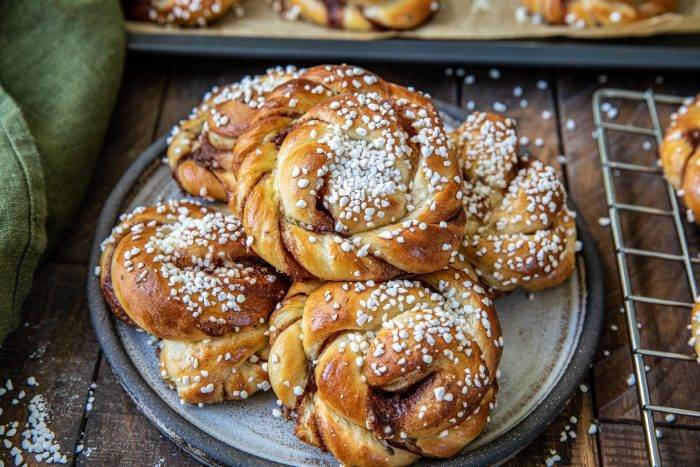

This is my very best recipe for cinnamon buns that really get really fluffy and tasty! I absolutely love baking cinnamon buns. If you have not tried baking buns with wheat flour special before, I can really recommend it. The buns are really fluffy and a lovely texture.
- 5dl of Milk
- 50g of Yeast
- 150g of Melted butter
- 1.5dl ofSugar
- 2tsp of Cardamom
- 1tsp of Salt
- 13-14dl of Flour
- 150g Melted butter
- 1dl of Sugar
- 2tbs of Cinnamon
- Crumble the yeast in a bowl.
- Warm the milk to 30-35 degrees, rather a little colder than too hot and let the dough take a little extra time instead.
- Pour the milk into the bowl and stir until the yeast dissolves. Add butter, sugar, cardamom and salt.
- Add almost all the flour, save a little for the baking. Work the dough for 10 minutes in a machine or double by hand until it releases from the edges of the bowl and can be touched without getting stuck on the fingers.
- Let the dough rise for 30-40 minutes
- Stir together all the ingredients for the filling.
- Roll out the dough into a rectangle and spread the filling evenly all over. Fold the dough along the long side.
- Cut about 1.5 cm wide strips of the dough that you twist, then spin to a spin and put the end underneath. Place on sheets of parchment paper.
- Cover the plates with baking sheets and leave to ferment for 30-40 minutes. Set the oven to 250 degrees.
- Brush with beaten egg and sprinkle with powdered sugar.
- Bake in the middle of the oven for about 6-8 minutes until they are golden both on top and under the bun.
- Place the buns on a wire rack and allow to cool under a cloth.
Back to Recipes